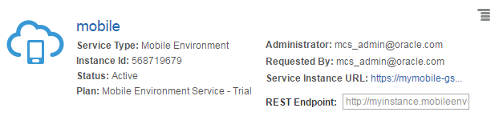
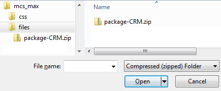
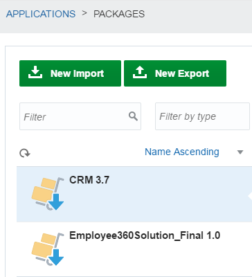
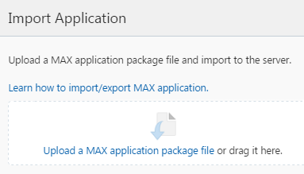
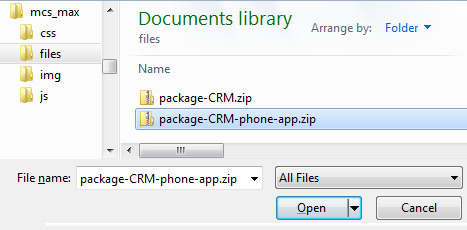
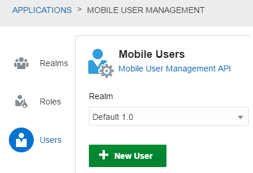
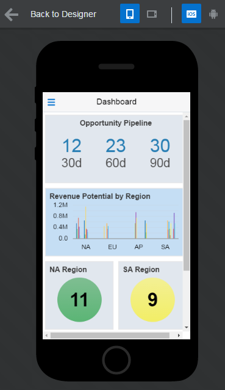
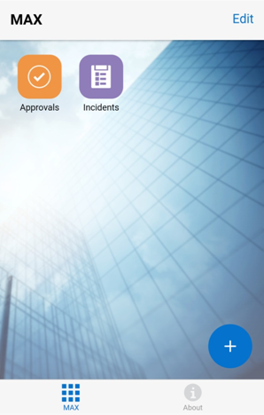
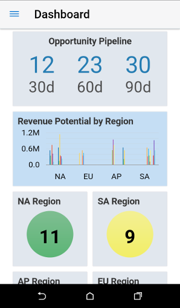

Running an App in Oracle Mobile Cloud Service
Running an App in Oracle Mobile Cloud Service Before You Begin
Before You Begin
This tutorial shows you how to import and run a mobile phone app with Oracle Mobile Cloud Service.
Background
Oracle Mobile Application Accelerator (Oracle MAX) is a free mobile app. With it, you can create and publish iOS and Android mobile apps without writing a single line of code.
What Do You Need?
- Access to an instance of Oracle Mobile Cloud Service
- Identity domain administration role
- The latest version of Oracle MAX for your Android or iPhone, downloaded from the Google Play Store or Apple App Store
- The sample CRM Service import package for Oracle Mobile Cloud Service
- The sample phone app import package for Oracle Mobile Cloud Service
 Log In to Your Instance of Oracle Mobile Cloud Service
Log In to Your Instance of Oracle Mobile Cloud Service
- Log in to your cloud instance.
- Click Dashboard.
- Click Customize Dashboard.
- Select Show for Mobile Environment Service.
- Close the Customize Dashboard window.
- In the Mobile Environment Service tile, click the Action menu
 and select View Details.
and select View Details.
- On the Service Details page, click the Service Instance URL link.
 Description of the illustration t01_02_mcs_details.png
 Import the Backend Service
Import the Backend Service
In this section, you import the customer relationship management (CRM) backend service that provides data to the mobile app.
- If you aren't logged in to your instance of Mobile Cloud Service, log in now.
- Click the DEVELOPMENT menu , and then click Applications.
- On the Applications page, click Packages.
- On the Packages page, click New Import.
- On the Import page, click Choose a package file.

Description of the illustration t02_04_import_package_overlay.png - In the Open File dialog box, navigate to the path where you saved the
package-crm.zipfile and click Open. Description of the illustration t02_05_open_file_dialog_crm_pkg.png - On the Import Package page, confirm that the following message appears:
package-CRM.zip is loaded. - For the following steps on the Import overlay, click Next:
- Upload
- Confirm
- Import Results
- For the Policies step on the Import overlay, click Skip.
The CRM 3.7 package is imported and listed on the Packages page.
 Description of the illustration t02_07_imported_pkg.png
 Import the Phone App
Import the Phone App
- If you aren't logged in to your instance of Oracle Mobile Cloud Service, log in now.
- Click , and then click Applications.
- On the Applications page, click Mobile Apps.
- On the Mobile Application Accelerator page, click New Application and follow the steps in the New Application Wizard to create a dummy app.
- On the Mobile Application Accelerator page, click Import.
- On the Import Application page, click Upload a MAX application package file.
 Description of the illustration t03_03_import_overlay.png - In the Open File dialog box, navigate to the path where you saved
package-CRM-phone-app.zipand click Open. Description of the illustration t03_04_open_file_dialog.png - On the Import Application page, confirm that the following message appears:
package-CRM-phone-app.zip: loaded and validated. - Click Import. The mobile app is opened in the Application Designer on the Mobile Application Accelerator page.
 Create a Mobile Test User
Create a Mobile Test User
In this section, you create a mobile test user in Oracle Mobile Cloud Service. This user is required to test your mobile app.
- If you aren't logged in to your Mobile Cloud Service instance, log in now.
- Click , and then click Applications.
- On the DEVELOPMENT menu, click Mobile User Management.
- On the Mobile User Management page, click Users, and then click New User.
 Description of the illustration t04_02_user_mgt.png - On the New User page, enter the values for the following fields, and then click Create:
- Username
- First Name
- Last Name
 Test the Mobile App in Oracle Mobile Cloud Service
Test the Mobile App in Oracle Mobile Cloud Service
- If you aren't logged in in your instance of Oracle Mobile Cloud Service, log in now.
- Click , and then click Applications.
- On the Applications page, click Mobile Apps.
- On the Mobile Application Accelerator page, click CRM-OBELAB (the sample app that you imported).
- On the Application Designer page, click Test .
- Enter your mobile test user name and password and click Sign In.
- Explore the mobile app in a web browser. When you finish, click Back to Designer.
 Description of the illustration t05_02_test_app_browser.png
 Test the Mobile App on Your Mobile Phone
Test the Mobile App on Your Mobile Phone
- On the Application Designer page, click Test on Phone.
- Click BUILD TEST APPLICATION. Wait until your mobile app builds.
- On the Web Test page, confirm that the quick response (QR) code appears:
Description of the illustration t06_03_qr_code.png - On your mobile phone, tap the Oracle MAX icon .
- In the app, tap the add (+) icon and search for a MAX-powered app.
 The MAX QR scanner loads.Description of the illustration t06_05_max.png - Point your mobile phone at the test QR code and scan it with the QR code scanner. After it's scanned, wait until the CRM-OBELAB app is downloaded and installed.
- On the sign-in screen, enter your user name and password, and click Sign In.
- Explore the mobile app on your mobile phone.
 Description of the illustration t06_08_mobile_app.png
 Want to Learn More?
Want to Learn More?
- Oracle Mobile Cloud Service: Get Started
- Assign MCS Team Member Roles
- Create a Mobile App in Record Time with MAX!